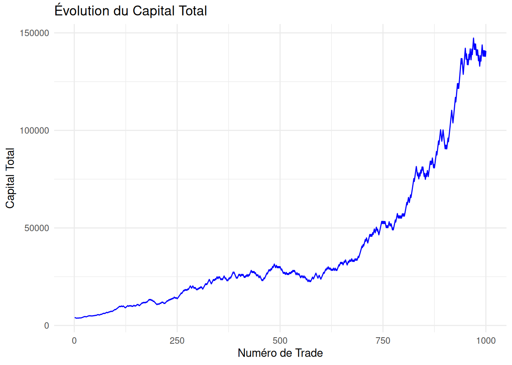

Code
winrate=0.6
winimpact = 0.02
looseimpact=-0.02
capital_initial=4000
nb_trade=1000winrate=0.6
winimpact = 0.02
looseimpact=-0.02
capital_initial=4000
nb_trade=1000set.seed(1234)
n<-nb_trade
# taille de l'échantillon
p<-winrate# paramètre de la loi de Bernoulli
esp<-p
var<-p*(1-p)
ech<-rbinom(n,size = 1,prob = p) # size = 1 correspond à la loi de Bernoulli
df<-as.data.frame(ech)
df |> mutate(
impact=case_when(ech==1~winimpact,ech==0~looseimpact),
capital_total = cumprod(1 + impact ) * capital_initial,
gain_trade = capital_total - lag(capital_total, default = capital_initial))->df
df |> mutate(row=row_number())->df
head(df,10) ech impact capital_total gain_trade row
1 1 0.02 4080.000 80.00000 1
2 0 -0.02 3998.400 -81.60000 2
3 0 -0.02 3918.432 -79.96800 3
4 0 -0.02 3840.063 -78.36864 4
5 0 -0.02 3763.262 -76.80127 5
6 0 -0.02 3687.997 -75.26524 6
7 1 0.02 3761.757 73.75994 7
8 1 0.02 3836.992 75.23514 8
9 0 -0.02 3760.252 -76.73984 9
10 1 0.02 3835.457 75.20504 10ggplot(df, aes(x = row, y = capital_total)) +
geom_line(color = "blue") +
labs(
title = "Évolution du Capital Total",
x = "Numéro de Trade",
y = "Capital Total"
) +
theme_minimal()
set.seed(1234)
n<- 1000 # taille de l'échantillon
p<-0.6 # paramètre de la loi de Bernoulli
esp<-p
var<-p*(1-p)
ech<-rbinom(n,size = 1,prob = p) # size = 1 correspond à la loi de Bernoulli
df<-as.data.frame(ech)
df |> mutate(
impact=case_when(ech==1~capital_initial*winimpact,ech==0~capital_initial*looseimpact),
capital_total = cumsum(impact) + capital_initial)->df
df |> mutate(row=row_number())-> df
head(df,10) ech impact capital_total row
1 1 80 4080 1
2 0 -80 4000 2
3 0 -80 3920 3
4 0 -80 3840 4
5 0 -80 3760 5
6 0 -80 3680 6
7 1 80 3760 7
8 1 80 3840 8
9 0 -80 3760 9
10 1 80 3840 10ggplot(df, aes(x = row, y = capital_total)) +
geom_line(color = "blue") +
labs(
title = "Évolution du Capital Total",
x = "Numéro de Trade",
y = "Capital Total"
) +
theme_minimal()